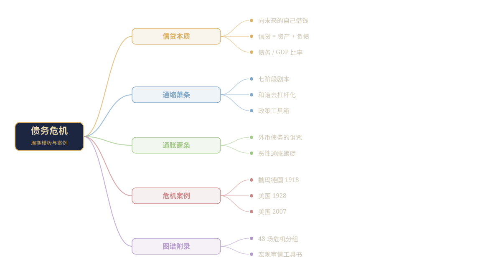

债务危机
〇 · 书籍信息
基本信息
| 书名 | 《债务危机》 |
|---|---|
| 作者 | 【美】瑞·达利欧（Ray Dalio），全球最大对冲基金桥水基金创始人。本书是桥水研究团队数十年债务危机研究的结集 |
| 出版 | 中信出版集团，2019年3月，ISBN 9787521700077；电子版版权页未标注译者。全书约 36 万字 |
| 体裁 | 模型 + 案例。三部分层层递进：典型债务大周期模型（理论）→ 三大案例详析（显微镜）→ 48个案例研究概要（统计大盘点），末尾附宏观审慎政策专论 |
| 一句话 | 债务本质是「向未来的自己借钱」；周期必然发生，但危机是否演变成灾难，取决于决策者能否用四种工具平衡推进，让名义经济增长率跑赢名义利率。 |
一 · 核心主题总览
全书三部分散而不乱，底层只讲六组概念。抓住它们，36 万字就能压成一张纸：
① 债务大周期：一套跨百年的机器
信贷的本质是向未来的自己借钱——今天多消费，明天必须少消费。正常的经济周期（约 8 年，央行可以熨平）之上，叠加着一个约 80 年一轮的债务大周期：债务相对收入的增长不可持续时，终以危机方式出清。达利欧强调它不是预言，而是一台「把历史数据装进去、把阶段判断吐出来」的机器——本书所有案例都是这台机器的出厂检验。
② 泡沫的七大特征（顶部识别检查表）
泡沫不等于高债务，而是「以不可持续的速度借债买资产」：①债务相对收入高速增长；②资产价格随之上涨；③用未来现金流购买未来商品；④买家预期价格继续涨；⑤新增信贷主要流向该资产；⑥经济过热（GDP 缺口转正）；⑦货币政策宽松转向收紧。关键词是「不可持续」——泡沫阶段美国债务占 GDP 升到 349%，英国 437%，冰岛一度高达 1173%。
③ 通缩性 vs 通胀性萧条（两种剧本）
分界线只有一条：危机发生时，债务与资产是否以本国货币计价。本国货币计价 → 决策者有印钞空间 → 通缩性萧条（资产价格跌、失业率高企，印钞约 GDP 每年 4%，货币对黄金贬值约 50%）；以外币计价 → 印钞会稀释外债 → 通胀性萧条（货币贬值约 30%、股价跌约 50%、通胀高企）。恶性通胀是通胀性萧条的极端形态——魏玛德国通胀率一度超过 10000%。
④ 四种政策工具与和谐的去杠杆化
出清债务只有四条路：财政紧缩（减支增税，痛苦且自我强化下行）、债务违约与重组（消灭债务但消灭信用）、印钞与债务货币化（最有效但易失控）、财富转移（从富人向穷人再分配）。和谐的去杠杆化的关键在于四者平衡推进，使名义经济增长率高于名义利率——债务负担被增长与通胀稀释，而不是被违约与紧缩撕裂。书里的量化标准：通缩萧条中印钞年均约 GDP 的 4% 即可稳住局面。
⑤ 三种货币政策与「推绳子」
利率降到零之后，央行还剩两手：第一种是利率驱动型（QE：印钞买债，压低长端利率、推高资产价格，约 GDP 4%/年的力度）；第二种是量化宽松更激进型（直接买风险资产、补贴消费）；第三种是货币融资财政型（直升机撒钱，央行与财政合流）。萧条深处信贷需求枯竭，降息如推绳子——此时必须财政与货币联手，否则政策形同虚设。
⑥ 资产负债视角的两条暗线
其一，久期错配是危机的通用结构：债务危机 = 资产端（长期、有风险）与负债端（短期、刚性）的期限与货币错配——许多长周期机构的资产负债表天然长成这个形状，只是风险换了个名字。其二，名义增速与名义利率的差是万能仪表：它决定债务能否被稀释，也决定利差损是否发生、偿付能力能否修复。这两条是全书最像财务体检报告的部分，每一条都能用自家报表复算。
二 · 第一部分 典型债务大周期模型
全书的世界观地基。先讲信贷与债务的物理结构，再分别给出通缩性、通胀性两套阶段剧本，最后把决策者的工具箱摊开在桌面上。
一、信贷与债务：向未来的自己借钱
- 信贷的正反两面：信贷扩张时人人受益——消费、投资、资产价格齐升；但信贷是把「今天的购买力」与「明天的偿债义务」同时创造出来，方向一转，同样一部机器反向运转，购买力消失的速度比它出现时更快。
- 大富翁比喻：游戏开局人人有现金，随着地产与房子增加、货币增多，多数玩家重仓地产——借款时，你实际上是在向未来的自己借钱。到周期后段，玩家没钱了而财富都在地产里，变现艰难，于是支出萎缩、借贷萎缩。
- 危险的组合：信贷给「非生产性支出」（奢侈消费、纯投机）融资，而不带来未来现金流——这类债务的上升意味着未来的偿债高峰没有偿债来源。判断债务质量的标准只有一个：借来的钱能否创造超过利息的收入。
- 债务周期的自我强化：上行期，资产价格上涨→抵押价值上升→信贷扩张→支出增加→收入增加→资产更值钱；下行期同一循环反向滚动。「雪崩」开始于第一个不能滚动的债务人——之后的每一步都是机械运动，而非情绪恐慌（达利欧明确指出：去杠杆化的主要驱动力并非心理因素）。
二、通缩性萧条：七阶段剧本
- 早期阶段：债务增速与收入增速匹配，杠杆健康，信贷是增长的朋友。
- 泡沫阶段：债务增速远超收入增速，资产回报吸引更多杠杆买入。量化画像：债务占 GDP 冲到约 300% 量级，GDP 缺口转正，资产年化回报显著高于常态。
- 顶部阶段：触发点通常不是危机本身，而是收紧（央行加息、资本流动逆转、意外的信用事件）。顶部出现在购买速度不可持续时——「人人认为价格会涨」本身就是顶部的定义。
- 萧条阶段：资产价格下跌→抵押缩水→信贷收缩→支出与收入下降→债务/GDP 反而上升（因为分母萎缩更快）。股价跌超 50%、失业率飙升是常态。央行降息受限（利率已近零），降息药方失效。
- 和谐去杠杆化：决策者印钞取代信贷萎缩——年均印钞约 GDP 的 4%，货币对黄金贬值约 50%，把痛苦去杠杆拉回增长轨道。名义经济增长率重新跑赢名义利率，债务/GDP 拐头向下。
- 推绳子阶段：复苏后决策者往往过早收紧；此时货币政策的绳子推不动经济——「量化宽松政策就像给心脏病发作者注射大剂量的兴奋剂」，过量会催生资产泡沫，不足则经济二次探底。
- 正常化：经济回到潜在产出附近。达利欧的量化观察：从萧条谷底到恢复前高，实际 GDP 平均约需数年，股价恢复所需时间更长。
三、通胀性萧条与恶性通胀：外币债务的诅咒
- 剧本差异只在一处：若债务以外币计价，印钞无法偿债，只会让本币对外债更「贵」。决策者被迫在「任由金融环境收紧（痛苦但出清）」与「印钞弥补资本外流（舒服但通胀）」之间做选择——大多数最终选择了后者。
- 通胀螺旋的风险因素清单：财政赤字巨大、实际短期利率过低、长期忽视通胀管控、外债占比高、外汇储备枯竭。其中最大的风险因素是财政赤字——通胀一旦启动，工资物价互相追赶，货币贬值与通胀互为燃料。
- 恶性通胀的终点：货币近乎归零，最终都要换币（德国纸马克→帝国马克、阿根廷奥斯特拉尔→比索、秘鲁印蒂→索尔）。凯恩斯在魏玛的见闻是绝佳注脚：「马克毫无价值，但又稀缺。」
- 战时经济：战胜国（英国 1941—1967、美国 1943—1951）战后萧条短暂、去杠杆有序；战败国背负外币债务与工业废墟，几乎必然滑向恶性通胀——债务的计价货币决定命运。
四、政策工具箱与小结
- 工具箱只有四件：财政紧缩、债务违约重组、印钞债务货币化、财富转移。历史反复证明：决策者最终总是选择印钞——因为紧缩太痛、违约太险，而印钞是唯一能让「名义增速 > 名义利率」的杠杆。
- 比债务更大的敌人：达利欧复盘百年案例后总结——无知和缺乏授权是比债务本身更大的问题。多数决策者一生只经历一次萧条，认知与制度授权都不够用。
- 判断标准一句话：去杠杆化是否「和谐」，就看名义经济增长率能否持续高于名义利率；高于，则债务被增长稀释；低于，则债务雪球越滚越大。
- 预防优于应对：泡沫阶段的宏观审慎约束（限制杠杆、逆周期缓冲）可以推迟甚至软化危机——这是附录用整章历史论证的结论，也是全书留给监管者的一页。
三 · 第二部分 三大案例详析
显微镜下的三场危机：恶性通胀的极端样本（魏玛）、通缩萧条的原型（大萧条）、和谐去杠杆化的当代范本（2008）。逐日复盘的细节里藏着模型的一切注脚。
一、魏玛德国 1918—1924：恶性通胀的教科书
- 起点是战争债务：一战期间德国债务升至 GDP 的 158%，其中以外币计价的占 GDP 的 64%——外币债务注定了印钞救不了它。
- 七阶段通胀：战争与赔款→汇率下跌→储备耗尽→印钞填补赤字→通胀自我强化→超通胀（1923 年通胀率超过 10000%，马克变成废纸）→货币改革（1924 年弃纸马克、采用帝国马克，五步走：终止战争赔款谈判、货币重锚、财政平衡、央行重建、恢复正常信贷）。
- 凯恩斯的现场观察：物价每天翻倍，但市面上马克现金反而短缺——「马克毫无价值，但又稀缺」，因为所有人都急着把纸币换成实物，货币流通速度爆炸。
- 分配效应：通胀是财富的大洗牌——债务人（政府、实业家）被洗白，储蓄者与债券持有人被消灭。凯恩斯留下那句名言：通胀是不公正的，通缩是不适宜的——两难本身就是萧条政治学的起点。
- 达利欧的注解：使货币贬值就像服用可卡因一样——短期能量迸发、长期成瘾失控；恶性通胀没有货币药方能解，终点只能是财政平衡 + 结构性改革 + 换币。
二、美国 1928—1937：通缩萧条的原型与修正
- 泡沫 1927—1929：债务占 GDP 达 125%，股市年化回报远超常态，保证金信贷狂飙；1928 年起美联储加息 250 个基点，顶部到来。
- 萧条 1929—1932：股价跌 84%、GDP 跌 26%、失业率升 23%——但债务/GDP 反而上升 98%：紧缩派掌舵，胡佛加税、放任银行倒闭、坚守金本位，教科书级的「新手错误」连击。
- 转折 1933：罗斯福弃金本位、美元对黄金贬值、大规模财政扩张——同一套模型里，「和谐去杠杆化」开关被打开，1933—1936 名义增速远超名义利率，债务/GDP 下降 70%，股市与工业产出强劲反弹。
- 1937 年的二次错误：复苏未稳就收紧（加息 + 财政紧缩），1937—1938 股市再跌 60%——「推绳子」阶段过早收紧的代价，全书最贵的一课。
- 量化注脚：本书反复强调「衰退」与「萧条」是两种动物——「衰退」是实际 GDP 出现萎缩，而「萧条」是金融去杠杆化导致的经济萎缩，处理方式完全不同。
三、美国 2007—2011：和谐去杠杆化的当代范本
- 泡沫 2004—2006：债务占 GDP 升到 349%，地产与次贷杠杆层层加码；美联储加息 400 个基点后，房价见顶，传导开始。
- 顶部 2007：次贷亏损暴露→货币市场与回购挤兑（2008 年 3 月贝尔斯登、9 月雷曼）→系统性恐慌，进入「雪崩阶段」。
- 萧条 2008：股价跌 50%、房价跌 28%、失业率升 5%。政策接力：降息至零→流动性工具→资本注入（TARP）→存款与债务担保；2008 年 11 月 QE1 开闸。
- 转折 2009 年 3 月：金融稳定计划 + 压力测试 + 大规模 QE 的「强力震骇」组合出台——标普单日涨 7.1%，3 月 9 日成为美股与美元的历史拐点。桥水的评论：美联储的政策行动不是意外，而是去杠杆化进程中非常典型的一步，既不可避免又不可缺少。
- 压力测试的信任红利：2009 年 5 月美联储公布的银行压力测试结果与桥水独立估算几乎完全相同——透明、可验证的测试比救助本身更能修复市场信心，这是本书对「沟通即政策」的最佳案例。
- 后续：2009—2011 和谐去杠杆化展开，QE1/QE2 接力；达利欧总结：「政府支持的债务占总债务的 2/3，约 29 万亿美元」——最终是央行与财政把整张危机的资产负债表背了下来。
四、三大案例的共性规律
- 顺序恒定：所有去杠杆化的进程大致相同，事件发生的顺序也基本类似——泡沫、顶部、萧条、政策转向、再膨胀，几乎从不乱序。
- 新手错误恒定：危机初期几乎都过度依赖紧缩与「不救助」的道德洁癖，直到痛苦难以承受才转向印钞——魏玛、1929 的美国、欧债的欧洲，剧本一字不差。
- 政治恒定：救助引发民愤（「惩罚银行家」），民愤威胁必要政策的出台——2009 年盖特纳险些因奖金风波去职；达利欧的判词：归根结底，拯救体系要比追求精确重要得多。
- 制度记忆恒定：危机后立法（格拉斯—斯蒂格尔、《多德—弗兰克法案》）随灾难记忆淡去而被轻视，新杠杆工具在旧法规的缝隙里重生——下一个周期的种子就此埋下。
四 · 第三部分 48个案例研究概要
把模型铺成统计表：48 场危机（21 场通缩性 + 27 场通胀性）、一张术语表、一篇宏观审慎政策专论。此部分以图表为主体——原书每案例均配分类图示，文字概要如实转述。
一、核心经济术语表（速读版）
- 债务周期五段定义：泡沫阶段（关键词「不可持续」）、萧条阶段（资产价格与增长的自我强化下跌，央行无力缓解）、通货再膨胀（宽松政策刺激经济从萧条中复苏）、去杠杆化（减轻债务负担的过程）、国际收支危机（现金与信贷均耗尽，丧失国际购买力）。
- 度量衡：GDP 缺口（产能利用率）、偿债总额（利息 + 本金）、M0（印发总量的度量）、实际汇率（贸易加权的币值变化）、收益率曲线（短端与长端之差）。
- 去杠杆化归因图：桥水的招牌分析法——把债务/GDP 的年化变化拆成「名义增长（通胀 + 实际增长）、新增借款付息、违约、偿还旧债」等因子。看懂它，48 个案例的数字才有因果结构。
二、48场债务危机的分组与图谱
- 筛选标准：过去 100 年里实际 GDP 降幅超过 3% 的去杠杆化时期；前 21 例为典型通缩性周期，后 27 例为典型通胀性周期。每例含自动生成的文本摘要与分类图示（负债状况、货币财政、经济、市场、国际收支五张图——原书图表章）。
- 通缩性案例：美国 1926—1936、英国 1927—1936、日本 1925—1936、法国 1926—1938、战时美国英国（1940s）、北欧三国 1980s（挪威、芬兰、瑞典——均以银行国有化收场）、日本 1987—2017（萧条持续 24 年的最长样本）、2008 金融危机家族（美国、英国、德国、奥地利、荷兰、爱尔兰、西班牙、葡萄牙、意大利、希腊）。
- 关键反差：日本 1987—2017 是「不和谐去杠杆化」的标本——宽松不足，名义增速长期低于名义利率，债务/GDP 越熬越高，直到 2013 年安倍经济学才转入再膨胀；希腊 2005—2018 至今未进入和谐阶段，因为欧元区框架下它没有货币主权。
- 通胀性案例：拉美 1980s（阿根廷、巴西、智利、墨西哥、秘鲁）、亚洲 1997（泰国、印尼、韩国、马来西亚、菲律宾）、俄罗斯三次（1996—2006、2005—2011、2012—2016）、土耳其两次、阿根廷与巴西的恶性通胀样本、冰岛 2005—2016（债务占 GDP 峰值 1173% 的极端样本）。
三、通胀性案例的共性规律
- 标准路径：外资流入→债务外币化→冲击（大宗商品暴跌、政治动荡、全球金融危机）→储备耗尽→弃守钉住汇率→货币大贬→通胀高企→IMF 援助 + 紧缩 + 结构性改革→以贬值重建竞争力。
- 风险因素排序：通胀螺旋的头号风险因素是财政赤字，其次为实际短期利率过低与长期忽视通胀管控——48 例中反复出现同一句话：要想阻止通胀率螺旋式上升，最终需要加大结构性改革力度。
- 数字规律：通胀性萧条中货币平均贬值约 30%、股价跌约 50%；恶性通胀样本通胀率普遍突破 100%（秘鲁 190%、墨西哥 151%、巴西逾 5000%、阿根廷与德国逾 10000%）。
- 政局后果：危机几乎都为民粹领导人搭建舞台（罗斯福、东条英机、齐普拉斯、欧尔班、梅内姆、埃斯特拉达）——经济痛苦的政治账单，从不缺席。
四、附录：宏观审慎政策（监管者的工具书）
- 定位：宏观审慎政策是央行通过监管机构定向引导信贷的工具——整体利率管总量，宏观审慎管结构：房市过热时提高首付与贷款价值比，房市萧条时反向放松，实现「在一个领域紧、在另一个领域松」。
- 工具清单：调节信贷需求（贷款价值比、偿债收入比、贷款期限、保证金要求）与调节信贷供给（准备金要求、资产组合限制、利率上限、监督指导与「直接施压」）两大类。
- 美国百年案例库：1934 年起的保证金要求（23 次逆周期调整）、Q 条例利率上限（最终因金融创新绕行而失败）、战时 W 条例、储贷危机前后的准备金调整、2005 年对次贷的迟到的指导方针——结论：工具永远在与金融创新赛跑。
- 监管哲学：1937 年过度紧缩重创复苏，2006 年对泡沫视而不见酿成大祸——宏观审慎的分寸是全书留给监管者最难、也最值钱的一题。
五 · 名段欣赏—— 原文精读 · 逐段赏析 ——
六 · 金句摘录—— 33 条 · 带出处 ——
"我保证，如果你能潜心学习并理解这三个部分的内容，你将会从全新的视角理解债务危机。"—— 前言
"借款时，你实际上是在向未来的自己借钱。"—— 第一部分 · 信贷与债务（大富翁比喻）
"去杠杆化的主要驱动力并非心理因素。"—— 第一部分 · 通缩性萧条
"「衰退」是实际GDP出现萎缩，而「萧条」是金融去杠杆化导致的经济萎缩。"—— 第一部分 · 萧条阶段的界定
"和谐的去杠杆化关键在于4种政策措施平衡推进。"—— 第一部分 · 和谐去杠杆化
"决策者最终总是选择印钞。"—— 第一部分 · 政策工具的历史结局
"无知和缺乏授权是比债务本身更大的问题。"—— 第一部分 · 关于决策者
"泡沫的关键词是「不可持续」——经济在经历了暂时的繁荣之后就会陷入萧条。"—— 第三部分 · 核心经济术语表（泡沫阶段）
"使货币贬值就像服用可卡因一样。"—— 第二部分 · 魏玛德国案例
"通胀是不公正的，通缩是不适宜的。"—— 第二部分 · 魏玛德国案例（引凯恩斯）
"马克毫无价值，但又稀缺。"—— 第二部分 · 魏玛德国案例（引凯恩斯见闻）
"周期顶部通常出现在购买速度不可持续时（也就是人们认为价格会上涨时）。"—— 第二部分 · 美国2007—2011案例
"还有一些人能很好地把握当前局势，成功地买低卖高。第三种人寥寥无几。"—— 第二部分 · 美国2007—2011案例
"在这些危机中，决策者不可能「完美地解决所有问题」，尤其是无法得到所有人的认可。"—— 第二部分 · 美国2007—2011案例
"归根结底，拯救体系要比追求精确重要得多。"—— 第二部分 · 美国2007—2011案例
"面对绝大的困难和压力，决策者依然做好自己的工作，竭力帮助尽可能多的人，正因如此，他们是我眼中的英雄。"—— 第二部分 · 美国2007—2011案例
"公众的愤怒是恰当的……但我认为我们无法满足公众的要求。"—— 第二部分 · 美国2007—2011案例（引盖特纳《压力测试》）
"量化宽松政策就像给心脏病发作者注射大剂量的兴奋剂。"—— 第二部分 · 美国2007—2011案例
"美联储今天公布的政策行动不是意外，而是去杠杆化进程中非常典型的一步，既不可避免又不可缺少。"—— 第二部分 · 美国2007—2011案例（桥水每日观察，2009年3月）
"去杠杆化进程就像瘟疫一样极少出现，因此我们可以分析的案例不多。"—— 第二部分 · 美国2007—2011案例（桥水每日观察，2009年4月）
"资金流动比资金数量更重要。"—— 第二部分 · 美国2007—2011案例
"如果美联储的「印钞」是取代信贷萎缩，就不会引发通胀加速走高。"—— 第二部分 · 美国2007—2011案例
"通货再膨胀不一定导致通胀，可能只会抵销通缩。"—— 第二部分 · 美国2007—2011案例（桥水每日观察，2009年夏）
"货币化不应被视为「全或无」的电灯开关，而应被视为调节流量的龙头。"—— 第二部分 · 美国2007—2011案例（桥水每日观察，2010年7月）
"财政紧缩措施是不能解决严重的债务去杠杆化问题的。"—— 第二部分 · 美国2007—2011案例（桥水每日观察，2010年）
"紧缩+过度负债=高风险。"—— 第二部分 · 美国2007—2011案例（桥水每日观察标题，2010年2月）
"由于长期债务周期的演变非常缓慢，每个周期基本上都是近百年的时间，因此大多数人没有经历过。"—— 第二部分 · 美国2007—2011案例（桥水每日观察，2010年7月）
"决策者先是否认将会出现债务危机。当危机确实出现时，他们又犯了同样的新手错误，即过度依赖通缩性政策措施。"—— 第二部分 · 美国2007—2011案例（谈欧债危机）
"所有的去杠杆化案例（涵盖过去几百年的大多数实例）的最终结果都是政府大量印钞，财政出现赤字，货币对黄金、大宗商品和股票贬值。"—— 第二部分 · 美国2007—2011案例（桥水每日观察，2010年10月）
"大多数去杠杆化的进程是大致相同的，事件发生的顺序也基本类似。"—— 第二部分 · 美国2007—2011案例（桥水每日观察，2010年10月）
"在重大债务危机结束时，政府往往会修改法律法规，但如果尽早进行修改，危机就不会这么严重。"—— 第二部分 · 美国2007—2011案例（收束段）
"其中最大的风险因素是财政赤字。"—— 第三部分 · 通胀性去杠杆化案例（通胀螺旋风险因素）
"要想阻止通胀率螺旋式上升，最终需要加大结构性改革力度。"—— 第三部分 · 48个案例研究概要（反复出现的结论）
七 · 拓展阅读—— 佐证与延伸 · 外部资源 ——
书中的债务周期模型出自桥水数十年的研究谱系，方法论可在下列外部资源中交叉验证与延伸。按「作者与机构 → 模型与概念 → 历史案例 → 延伸讨论」排列。
八 · 个人感悟与心得
读《债务危机》：四点心得
其一，长负债机构的资产负债表天然长成「债务危机」的形状，这本书是一面镜子。达利欧给危机开的病理诊断只有一条：资产端（长期、有风险、会跌）与负债端（短期、刚性、要兑付）的错配。把主语换成任何久期错配的机构，这句话几乎一个字不用改——负债端是被锁死的刚性现金流，资产端是几十年的长期资产。通缩萧条剧本里的量化注脚（股价跌超 50%、失业率升 23%、利率触零）恰好就是压力测试该有的极端情景。落地动作很具体：把自家投资资产按「典型通缩萧条」重估一遍——权益按 −50%、利率按触零、信用利差按走阔，看净资产与核心资本充足率能不能接住；接不住的缺口，就是我们在债务周期里的敞口。
其二，「名义增速 vs 名义利率」是利差损的宏观镜像，日本案例就是我们的噩梦清单。全书反复出现的判据：债务负担能否下降，取决于名义经济增长率是否持续高于名义利率。日本 1987—2017 用 24 年证明了反面——宽松不足，名义增速长期趴在名义利率之下，债务越熬越厚，偿债总额一度高达 GDP 的 78%。这正是利差损的宏观版：负债端承诺的预定利率是刚性的，资产端收益率随周期起落，一旦「资产端长期收益率 < 负债端成本」，缺口只能靠时间或资本金来填。落地动作：给存量业务算一次久期缺口与再投资收益率缺口，并用「名义 GDP 增速 − 10 年期国债收益率」这个宏观利差做监测仪表——它是我们在 Japan 时刻到来前唯一的预警灯。
其三，2009 年的压力测试教会我们：透明比完美更重要。美联储 2009 年 5 月公布的银行压力测试结果，与桥水独立测算「几乎完全相同」——市场当天就信了，美股自此筑底。达利欧写道「我们两年来第一次确信，监管机构真正把握了银行业务问题的深度和广度」。这一段的启示再直白不过：风险报告的价值不在结果好坏，而在参数是否实事求是、情景是否足够严峻、方法是否可验证。一份被粉饰的乐观报告是负债——它透支的是监管与市场的信任；一份诚实的悲观报告是资产——它换来的反而是融资与信心。落地动作：把自家压力测试的情景与「典型通缩萧条」对照（美联储测的是两年损失，桥水算的是全周期损失——我们多数报表恰恰漏掉了第三年及以后的累积亏损），查一查有没有系统性低估多年期风险。
其四，债务周期提醒长期资金：别让长钱活成短钱。书里熊市三类投资者的分类对我们是当头一棒：跌了恐慌抛售的是第一类，硬扛盲信的是第二类，买低卖高的是第三类——「第三种人寥寥无几」，连桥水都如此自省。长钱本应天然是第三类：负债久期最长、现金流最可预测，是全市场最有资格逆周期配置的钱。但负债成本与考核周期常把我们逼成第一类或第二类——市场顶部追高（购买速度不可持续），市场底部不敢买（出售速度不可持续）。达利欧的量化锚点很有用：顶部出现在「人人认为价格会涨」时，底部出现在「大多数人看跌」时——把这两句话做成资产配置委员会的例行体检问题，比任何复杂的择时模型都便宜。落地动作：在投资决策流程里加一道「周期位置签」，每个季度回答两个问题——当前的购买速度可持续吗？我们此刻更像哪一类投资者？
一句话收束：这本书嘴上讲的是国家债务，手上练的是资产负债表管理的通用语法——七阶段、四工具、3% 的 GDP 降幅、4% 的印钞力度，每个概念都能装进一张资产负债表。债务是向未来的自己借钱，而准备金是替未来的自己背书——管好这张表，就是对周期最好的回答。
九 · 一页速查（复习用）
| 全书框架 | ①债务大周期模型（理论：信贷本质 + 两套剧本 + 工具箱）→ ②三大案例详析（魏玛 1918—1924 · 美国 1928—1937 · 美国 2007—2011）→ ③48个案例概要 + 术语表 + 宏观审慎政策附录 |
|---|---|
| 周期七阶段 | 早期 → 泡沫 → 顶部 → 萧条 → 和谐去杠杆化 → 推绳子 → 正常化（通缩剧本）；通胀剧本以「外币债务 + 弃守汇率」改写后半段 |
| 两套剧本分界 | 债务是否以本国货币计价：本国币 → 通缩萧条（印钞可用）；外币 → 通胀萧条（印钞稀释外债） |
| 泡沫七特征 | 债务高增 · 资产价格齐涨 · 杠杆买未来商品 · 价格预期乐观 · 信贷流向该资产 · GDP 缺口转正 · 货币由松转紧 |
| 四大政策工具 | 财政紧缩 / 债务违约重组 / 印钞债务货币化 / 财富转移——和谐去杠杆 = 四者平衡，名义增速 > 名义利率 |
| 三种货币政策 | ①利率驱动（QE）②激进购资产与补贴 ③货币融资财政（直升机撒钱）；利率触零后必须财政货币联手，否则「推绳子」 |
| 关键数字 | 通缩萧条：印钞约 GDP 4%/年 · 货币对黄金贬 50% · 股价跌超 50% ｜ 通胀萧条：货币贬 30% · 股价跌 50% ｜ 泡沫期债务/GDP 约 300% 量级（美国 349% · 英国 437% · 冰岛 1173%） |
| 三大案例 | 魏玛：外币债务 64% → 通胀超 10000% → 换币 ｜ 美国大萧条：紧缩错误 → 1933 弃金本位反转 → 1937 过早紧缩再跌 60% ｜ 美国 2008：QE + 压力测试 + 担保 → 2009 年 3 月筑底 |
| 48案例规律 | 21 通缩 + 27 通胀；顺序恒定、新手错误恒定（先紧缩后印钞）、政局后果恒定（民粹上台）；通胀螺旋头号风险因素 = 财政赤字；日本萧条最长 24 年 |
| 宏观审慎 | 管结构不管总量：贷款价值比 · 保证金 · 准备金 · 利率上限 · 监督指导；工具永远在与金融创新赛跑（Q 条例之败） |
| 一句话总结 | 债务是向未来的自己借钱；周期的答案不在恐慌也不在杠杆，而在让名义增长跑赢名义利率。 |
十 · 全书思维导图—— 一图纵览 ——

一图纵览全书骨架 · 手机端可左右滑动查看全图